| Symbol | Name | Description |
| Addition [+] | Adder unit. It calculates an output signal that is the algebraic sum of the two input signals | |
| AnalogSource [+] | Signal generator producing different waveforms | |
| BooleanToReal [+] | Transforms Boolean signals to analog signals. The user defines the value of the output signals when the input signals are TRUE or FALSE | |
| ButterLow [+] | Defines a transfer function as an n_f-th order low pass filter with Butterworth characteristics and cut-off frequency | |
| CLK [+] | Component to generate pulsed signal of type BOOLEAN | |
| Clock [+] | Generates output signals equal to the simulation model time plus an offset | |
| Cntrl_DigitalPID [+] | Digital controller of PID type | |
| Cntrl_P [+] | Standard proportional controller | |
| Cntrl_PI [+] | Standard proportional-integral controller | |
| 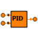 | Cntrl_PID [+] | Standard proportional-integral-derivative controller |
| Counter_DOWN [+] | ||
| Counter_UP [+] | ||
| 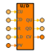 | Counter_UP_DOWN [+] | |
| CritDamping [+] | n_f-order filter with critical damping characteristics and cut-off frequency freq. It is implemented as a series of first order filters | |
| DeadZone [+] | zero output within a specified region called dead zone | |
| Delay [+] | To delay an input signal by a given period of time | |
| Demux2 [+] | Demultiplexer of 2 outlets | |
| Demux3 [+] | Demultiplexer of 3 outlets | |
| Demux4 [+] | Demultiplexer of 4 outlets | |
| Demux5 [+] | Demultiplexer of 5 outlets | |
| Demux6 [+] | Demultiplexer of 6 outlets | |
| Demux7 [+] | Demultiplexer of 7 outlets | |
| Demux8 [+] | Demultiplexer of 8 outlets | |
| Derivative [+] | To derive an input signal | |
| 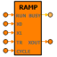 | Digital_ramp [+] | Digital ramp |
| EQ [+] | Equality | |
| FirstOrderHold [+] | First order sample-and-hold latch | |
| GE [+] | Greater or equal than | |
| GT [+] | Greater than | |
| Gain [+] | To multiply an input signal by a constant number | |
| Gate_AND [+] | Defines a logic AND gate | |
| Gate_NOT [+] | Defines a logic inverter or NOT gate | |
| Gate_OR [+] | Defines a logic OR gate | |
| 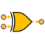 | Gate_XOR [+] | Defines a logic exclusive XOR gate |
| Hysteresis [+] | This function block implements Boolean hysteresis on the difference of REAL inputs. | |
| Integrator [+] | To integrate an input signal | |
| Inverse [+] | To calculate the inverse of a signal | |
| LE [+] | Lower or equal than | |
| 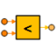 | LT [+] | Lower than |
| LogicalSwitch [+] | Defines a logical switch | |
| MathFunction [+] | To perform a mathematical function on the input signals such as the square root, the sine, etc | |
| Maximum [+] | Outputs the maximum input value | |
| Minimum [+] | Outputs the minimum input value | |
| Module [+] | Module unit. It calculates an output signal that is the module of a division of two input signals | |
| 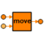 | Move [+] | Move standard operation |
| Mux2 [+] | Multiplexer of 2 inputs | |
| Mux3 [+] | Multiplexer of 3 inputs | |
| Mux4 [+] | Multiplexer of 4 inputs | |
| Mux5 [+] | Multiplexer of 5 inputs | |
| Mux6 [+] | Multiplexer of 6 inputs | |
| Mux7 [+] | Multiplexer of 7 inputs | |
| Mux8 [+] | Multiplexer of 8 inputs | |
| NEQ [+] | Inequality | |
| Product [+] | To multiply two input signals | |
| RS_Bistable [+] | RS bistable | |
| RandomSource [+] | Defines a component generating random numbers following various probability distributions | |
| RealToBoolean [+] | Transforms an analog (real) signal to a Boolean signal | |
| RelationalOperator [+] | To perform specified relational operation on the input signals | |
| Relay [+] | To switch output signals between two constants depending on the value of the input signals. ON/OFF controller with hysteresis | |
| 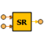 | SR_Bistable [+] | SR bistable |
| Saturation [+] | To limit the range of a signal | |
| Scaling [+] | This component implements Boolean hysteresis on the difference of REAL inputs. | |
| Selector [+] | To select signals from the input port and transfer them to the outlet port | |
| SourceChirp [+] | Generate a sine wave with increasing frequency | |
| SourceDataFile [+] | To generate an analog signal interpolated in a table read from a ASCII file specified by the user | |
| SourceExp [+] | Generate a rising and falling exponential signal | |
| 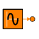 | SourceExpSine [+] | Generate a sine wave with increasing frequency |
| SourcebConstant [+] | Generate a constant signal of type BOOLEAN | |
| SourcebPulse [+] | Generate pulse signal of type BOOLEAN | |
| SourcebSampleTrigger [+] | Generate sample trigger of BOOLEAN type | |
| SourcebStep [+] | Generate step signal of type BOOLEAN | |
| StateSpace [+] | To define a state-space model | |
| Subtraction [+] | Subtraction unit. It calculates an output signal that is the algebraic subtraction of the two input signals | |
| Switch [+] | Defines a analog switch | |
| TF_1stOrder [+] | First order transfer function | |
| TF_2ndOrder [+] | Second order transfer function | |
| Table1DFunction [+] | To perform a linear mapping (table interpolation) of the input signals | |
| Timer_TOFF [+] | Timer to delay a signal on deactivation | |
| Timer_TON [+] | Timer to delay a signal on activation | |
| Timer_TP [+] | Timer to delay a signal on deactivation | |
| TransferFunction [+] | Linear P(s)/Q(s) transfer function | |
| Trigger_FE [+] | This component implements falling edge detection. | |
| Trigger_RE [+] | This component implements rising edge detection. | |
| UnitDelay [+] | To delay a signal one sample period | |
| VarDelay [+] | To delay an input signal by a variable period of time | |
| ZeroOrderHold [+] | Zero-order hold of one sample period | |
| 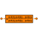 | ZeroPole [+] | Zero-poles transfer function |
| dFilter [+] | Discrete filter on the form: F(z) = num(1/z) / den(1/z) | |
| dIntegrator [+] | Discrete-time integration of the input signal | |
| 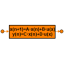 | dStateSpace [+] | To define a discrete state-space model |
| dTransferFunction [+] | To define a discrete transfer function | |
| 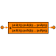 | dZeroPole [+] | To implement a discrete transfer function in terms of poles |
| iDivision [+] | Division unit. It calculates the integer part of the division of two input signals. fractional quotients are rounded toward zero to the nearest integers. |
Document generated automatically (Date: 2019:01:23, Time: 00:18:46)